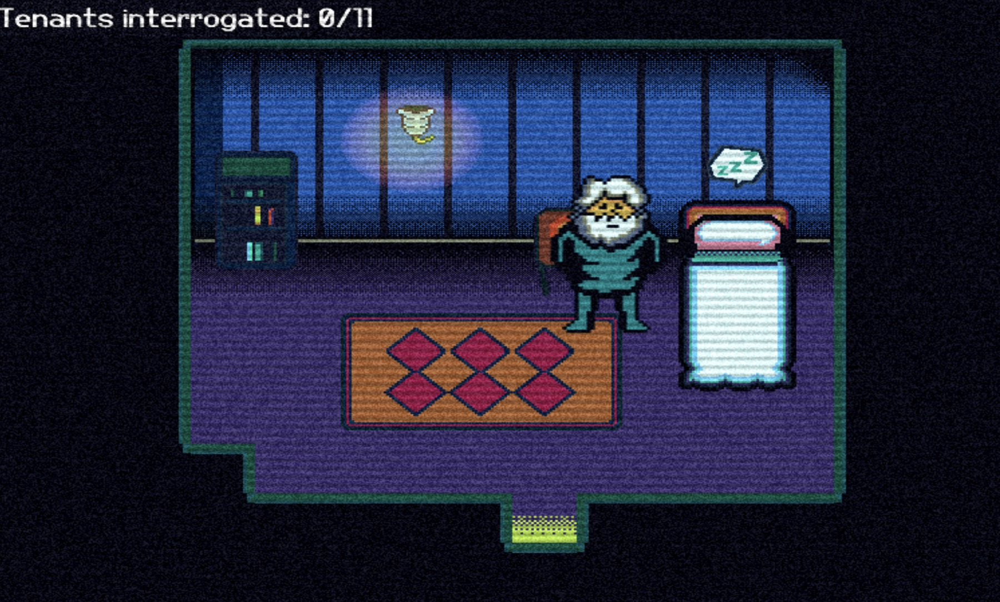
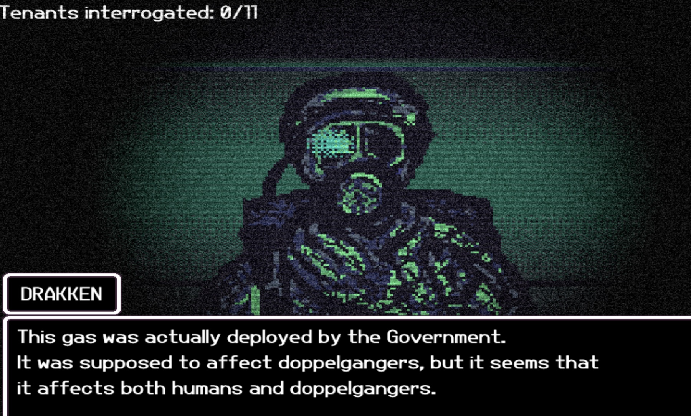
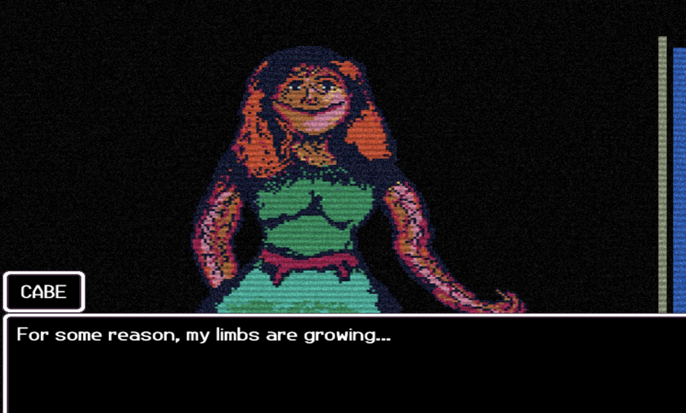
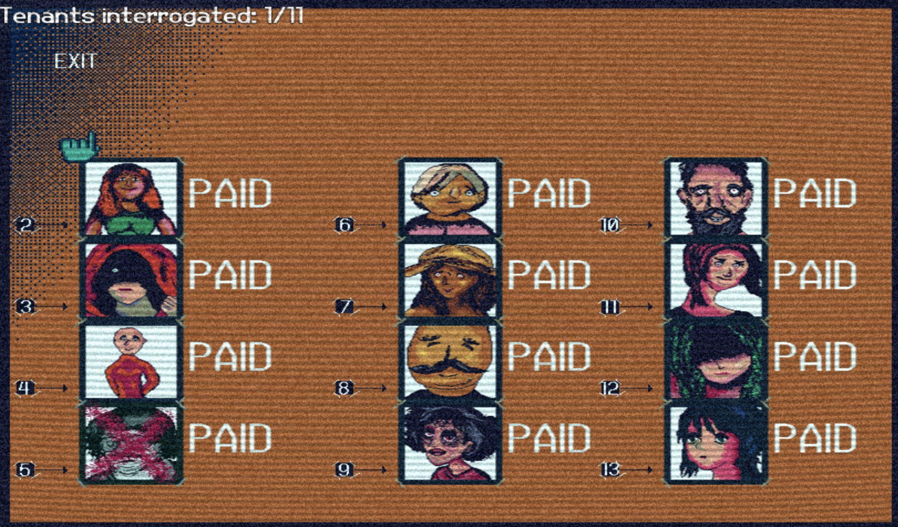

01
Naming the tenants
Choosing names made the residents easier to remember and gave the later accusation list a more personal feeling.
Game proposal
A surreal 2D exploration game about memory, identity, and unreliable perception.

01
The Room Remembers places a featureless floating figure inside a soft-gray childhood bedroom illuminated by flowing color. Important objects appear in stark black, making them feel jarring and significant within the gentle environment.
By examining drawings, toys, trophies, medals, photographs, and a letter from Mom, the player uncovers fragments of a forgotten past. Peeling back the wallpaper reveals an inverse version of the room. The player must use what they remember to return displaced objects to their original locations and find a way home.
The experience moves from warmth and curiosity to confusion and uneasy recognition. Its ending leaves the player uncertain whether they escaped the hallucination or entered another version of it.
02
I played Doppelpartment, a browser game by independent developer A. V. Dossow. The player manages an apartment building, learns about its tenants, and decides who may have been replaced by a doppelganger. Dossow is credited with the story, art, music, maps, development, planning, and game design, with additional sound and technology resources credited in the shipped game.
01
Choosing names made the residents easier to remember and gave the later accusation list a more personal feeling.
02
The title and cover suggested that something was wrong without revealing what would happen, allowing uncertainty to guide the first playthrough.
03
Free exploration and dialogue made the building feel familiar before the soldier arrived and asked for a decision at the end of the night.




03
AI: Choosing names may make the player more attached to the tenants and more hesitant to report them.
Bella: Imagine the moment without choosing the names. Treat your answer as a hypothesis and propose a comparison.
Revised analysis: Chosen names may improve memory and ownership, but fixed names might make tenants feel more like authored individuals. A small test could compare recall, attachment, and hesitation across two otherwise identical versions.
Naming may support memory and personal investment, but that interpretation cannot be presented as the creator’s intention. The more strongly supported lesson is that the game teaches a baseline and then makes the player notice deviations from it.
This adaptive research process changed my design. The Room Remembers will keep movement, object locations, and interaction cues consistent enough to learn in the first room. Uncertainty will come from changing memories, colors, sounds, and object meaning—not from unclear controls. The central reconstruction mechanic asks the player to return objects to remembered locations and reconsider mistakes without losing their way through the interface.
04
My interpretation of hallucination is a world where the player cannot be certain what reality is. I want the player to question how they decide what is true within the game.
The setting is a simple childhood bedroom filled with drawings, notes, toys, stuffed animals, trophies, medals, and other signs that the room is well loved. The memories feel true, but their details are jumbled.
The player explores the room to remember who they are and how to get home. They observe objects, learn the original layout, and later return displaced objects to the locations they remember.
Peeling wallpaper reveals a new perspective and causes the bedroom to fall apart. The player must reconstruct the room before it is lost to the ether, but the final familiar space still contains one detail that feels wrong.
05
The interaction moves from observation to exploration and finally to spatial reconstruction. The player learns the room before the game asks them to trust their memory of it.
Interactive study
Select or drag each object to the location where it belonged. The room responds to correct and incorrect memories.
Sound is optional and never starts automatically.
Displaced objects
Learn to float, look, and examine.
Moving letters resolve into “I love you. Mom.”
The familiar room collapses into a garbled version.
Return objects to remembered locations.
Mom returns the letter, but something is wrong.
Player: Tests movement and looks around.
Game: Objects react subtly as the room is introduced.
Continue: Attention moves toward the bed.
Player: Approaches the object on the bed.
Game: The view pans down toward the page.
Continue: The letter opens for inspection.
Player: Tries to follow the moving letters.
Game: “I love you. Mom.” becomes legible.
Continue: Search for related memories.
Player: Examines drawings, toys, and awards.
Game: Each reveals a sound or memory fragment.
Continue: The room becomes familiar.
Player: Interacts with a loose edge.
Game: The room tears apart into layers.
Continue: Enter the inverse room.
Player: Compares displaced objects with memory.
Game: Familiar objects appear altered.
Continue: Choose where each object belongs.
Player: Returns objects to remembered locations.
Game: Correct placements restore color and sound.
Continue: A route home appears.
Player: Accepts the letter from Mom.
Game: The message returns with one wrong detail.
Continue: The game ends without confirming reality.
06
Environment — Soft-gray, two-dimensional, and quiet enough for important objects to stand out.
Flowing color — Coral, yellow, lavender, pink, and cyan move through the character like illuminated ribbons.
Important objects — Near-black is used sparingly so story-critical items feel jarring.
Inverse room — Cool blue and violet values reverse the warmth without making the space unrecognizable.
#D9D7D4#F4E7DE#F29A91#B7A6D9#79DCE5#111111Atkinson Hyperlegible Next is proposed for interface text and dialogue so the controls remain clear while the world distorts. The letter uses a softer handwritten treatment, but its final message resolves clearly.
Braille Institute typeface sourceSoft 2D illustration keeps the room intimate. Personal objects overlap naturally rather than forming a perfect display, and remain recognizable after their positions, colors, or scale change.
There is no permanent inventory or large status display. A quiet glow and short prompt identify interactive objects. Correct placements restore part of the room; mistakes briefly increase distortion and allow another attempt.
The character floats with a soft colored trail. Object motion remains restrained until the wallpaper tears, when the room separates into layers. Reduced-motion settings replace large transitions with gentle fades.
The normal room uses a gentle hum with ethereal, light, and airy music. Environmental sounds share related pitches so the room feels comfortable and harmonious. As the world becomes jumbled, familiar sounds stretch, detune, and gain longer reverb. The change is gradual rather than a jump scare.
A photograph contains faint children laughing, while a stuffed animal emits a soft squeak. Correctly placed objects return sounds to their original pitch and reduce the reverb. Incorrect placements produce a brief detuned echo.
Nothing plays automatically. Each reference opens only when the visitor selects it.
Reference for the peaceful musical layer beneath object sounds.
deadrobotmusic — Ethereal Choir Pad, CC0Reference for faint laughter connected to the photograph.
craigsmith — Children Laughing, CC0Reference for a short squeak softened to feel familiar rather than comic.
qubodup — Squeaky Toy Squeaks, CC0Reference for a slowly expanding dissonance during the transformation.
Sclolex — complexharmonicdrone.wav, CC007
The scope is one complete, testable room sequence rather than a larger but unfinished game.
Week 2
I will begin with gameplay before detailed art or sound. The first build will include floating movement, one bedroom, object examination, the letter, wallpaper transition, normal and garbled room states, and three objects that can be returned to remembered locations.
A first art pass will establish the soft-gray room, flowing colors, and limited black objects. Audio will remain placeholder where necessary.
Outcome: A playable sequence from entering the room through one short reconstruction.
Week 3
I will test movement, object prompts, discovery of the letter and wallpaper, readability of the moving text, memory difficulty, placement feedback, and whether the ending communicates uncertainty.
The results will guide adjustments to pacing, object positions, character motion, artwork, color, ambient music, object sounds, discordant tones, and reverb.
Outcome: One focused, complete prototype suitable for a short playtest.